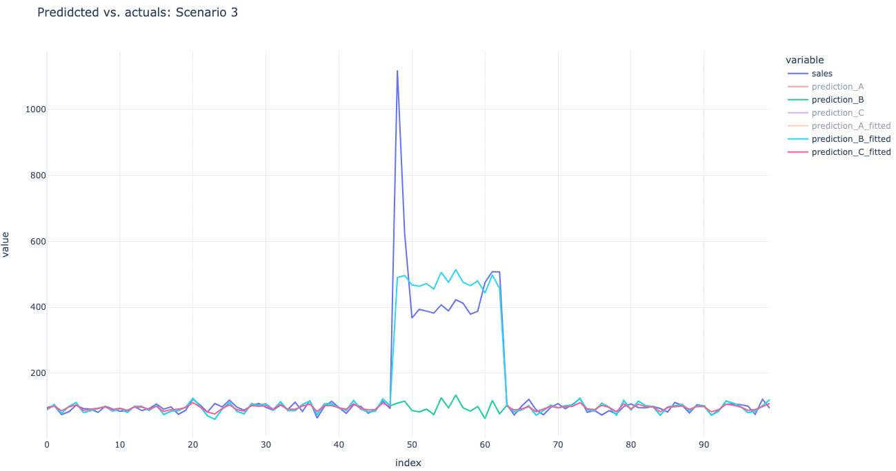

So you have an outlier in your data. How do you handle it?
Three Ways to Handle an Outlier
Well, you can either include it or drop it from your data. If you include it, it may bias your regression coefficient.
Let’s assume you have some data where you have X = Emails Sent and Y = Sales. You want to know the effect of email on sales.
You have at least three options:
- A: fit the model on 100% if data, and don’t account for the outlier.
- B: Create a dummy variable that’s 1 for outlier and 0 otherwise.
- C: drop the outlier from your data and fit without a special feature.
It turns out that options B and C are identical in their predictions for non-outlier time periods. Effectively, you isolate the effect of those outliers when you create a dummy variable for them. Let’s take a look.
Scenario 1: Outlier with constant effect
Here we have some sales data over time. You can see the outliers here are all relatively equally high:

Now I’m going to fit a model as above and get the “fitted values”, or in-sample predictions. We can see from this that the A model (no outlier treatment) has a higher line. This is the effect of the outlier on the slope. But the B model fits the data near perfectly. You’ll notice the C model and the B model are perfectly overlapping except for the gap on C (remember we dropped rows, so we didn’t have in-sample fitted values there!)

Now, the model B is Y = intercept + email + is_holiday Boolean. If you make a prediction assuming is_holiday = 0 then you get the green line. This is the effect of making a prediction of what your sales would have been if it wasn’t a holiday. This is one way to get a “baseline”. Then the blue line is the predicted value with holiday = 1. The gap between blue and green is the effect of your holiday (I could show the model coefficients but I’m lazy!)

Okay, last interesting bit: what would the prediction of the model C be during this holiday period? Remember, we don’t have in-sample predictions (fitted values) because we dropped those rows. So technically, this middle spot is “out of sample” for model C.
What do we see? Well since the slope for “email” is the same for model C and B, the predictions are near identical. Let’s add in the model C non-fitted line:
What do we see? We see that model C (purple line) overlaps the green line perfectly.
So per this simple example, there are two ways of handling an outlier:
- Drop it from your data (not ideal)
- Use feature engineering to handle it (ideal)
In a more complicated setting, there are tons of real world interactions in your data that make this even more complicated. But with good feature engineering you can isolate the effect of those outliers or subgroups.
I hope this helps. As always, always test the principle on your own data before fully trusting this principle. There may be something specific about your data or your model where this may not apply exactly (such as using decision trees or a GLM or GAM).
Lastly, it’s a beautiful world. You can ask ChatGPT to code up these analyses really quickly. Do you have a debate at work? Ask ChatGPT to run a simulation.
Scenario 2: Non constant outliers
Now what if you have a holiday period AND a massive one-day spike (Black Friday)?
Here’s what the model predictions look like in green. 
And this is where we start to see the Model C predictions (drop outliers) differ from model B:
The predictions can differ by 10% or more. This means the coefficients can be wildly different, and that’s what we see. Model B’s email coefficient was 2.0 compared to just 1.1 for C. (Remember the model is y ~ emails (+ holiday)).
How do we solve this problem? Back to Scenario 1 - more feature engineering and interactions.
The solution (and exercise left for the reader) is to fit a new one-hot encoded feature for those separately spikey indexes.
Interpretation: if you believe there is a constant effect for your holiday period, you only need one holiday feature to not bias your emails coefficient.
If you see three distinct spiky periods, you need three holiday indicators: one either for the whole time period or just the middle 10 days and a second for the last 3 days (last spike) and third for the first two days (big spikes).
Basically, the more one-hot encoding you’re doing, the more you’re overfitting your model. If you identified every spike with a feature, it’s as if you’ve dropped them from the model if they have those spikes same average effect.
But if that average effect changes over time, you need to be smarter about your feature engineering.
To avoid overfitting philosophically, you should think about what generalizes. It doesn’t make sense to one-hot-encode every spike. Or maybe you had a freak event that causes a huge spike one day (a viral video). If that’s the case, you just have to accept the noise.
But if you believe that holiday period will happen in the future, you’re assuming it’ll behave like the prior holiday periods.
Other ideas you could try: one-hot encode the days before/after a holiday to capture ramp-up or ramp-down. Or scale your data by percentages so you’re making a prediction relative to the annual baseline or something (see the “other ways” below for a roughly similar idea).
Here’s are the principles:
- For every one-hot encoding you do, you assume that the average effect of that period across all data points is the same, plus some random error.
- If that average effect isn’t the same, use multiple dummy features.
- Only use one hot encoding where you think it’ll generalize to the future. Otherwise you’re overfitting or hindsight biasing your model.
- Don’t treat big holiday periods (Christmas) the same as little periods. Give them each their own feature. # In Conclusion
Feature engineering has a huge impact on your model’s ability to make good predictions. Also, it affects the interpretability of your model coefficients, which may be valuable in gaining insights from your data (such as what is the causal effect of email on revenue).
When you drop a row of data, you’re essentially creating a new model. You’re doing a type of feature engineering.
The better thing to do is to actually just do the feature engineering, because you’ll be able to generalize to similar data points like that in the future. # Other Ways to Handle Outliers
In this DoorDash blog, they provide a unique solution for XGBoost, mostly because XGBoost has a hard time extrapolating. But there are other ways to handle your data.
Appendix (Code)
Here’s the code to reproduce the above, thanks to help with ChatGPT:
import pandas as pd
import numpy as np
import statsmodels.api as sm
import plotly.express as px
SCENARIO1 = False # constant outliers
SCENARIO2 = True # non-constant outliers
SCENARIO3 = True # one super massive outlier
# Setting a random seed for reproducibility
np.random.seed(42)
# Generating a time series dataset
n = 100 # number of days
emails_sent = np.random.poisson(lam=50, size=n) # average 50 emails sent per day
sales = 20 + 1.5 * emails_sent + np.random.normal(0, 10, n) # base sales equation
is_holiday = np.zeros(n)
# Introducing an outlier (e.g., holiday sales)
indexes = [50, 51, 52, 53, 54, 55, 56, 57, 58, 59]
for ix in indexes:
sales[ix] += 300 + np.random.normal(0, 10, 1) # significant spike in sales
is_holiday[ix] = 1 # flagging the outlier
if SCENARIO2:
indexes = [60, 61, 62]
for ix in indexes:
sales[ix] += 400 + np.random.normal(0, 10, 1) # significant spike in sales
is_holiday[ix] = 1 # flagging the outlier
indexes = [49]
for ix in indexes:
sales[ix] += 500 + np.random.normal(0, 10, 1) # significant spike in sales
is_holiday[ix] = 1 # flagging the outlier
indexes = [48]
for ix in indexes:
sales[ix] += 1000 + np.random.normal(0, 10, 1) # significant spike in sales
is_holiday[ix] = 1 # flagging the outlier
# Preparing datasets for the three options
df = pd.DataFrame({‘emails_sent’: emails_sent, ‘sales’: sales, ‘is_holiday’: is_holiday})
# Option A: Including the outlier
X_A = sm.add_constant(df[‘emails_sent’])
y_A = df[‘sales’]
# Option B: Including the outlier and a dummy variable
X_B = sm.add_constant(df[[‘emails_sent’, ‘is_holiday’]])
y_B = df[‘sales’]
# Option C: Excluding the outlier
df_C = df[df[‘is_holiday’] == 0]
X_C = sm.add_constant(df_C[‘emails_sent’])
y_C = df_C[‘sales’]
# Fitting the models
model_A = sm.OLS(y_A, X_A).fit()
model_B = sm.OLS(y_B, X_B).fit()
model_C = sm.OLS(y_C, X_C).fit()
# Extracting the coefficients for the ‘emails_sent’ predictor
coef_A = model_A.params[‘emails_sent’]
coef_B = model_B.params[‘emails_sent’]
coef_C = model_C.params[‘emails_sent’]
model_A.summary()
model_B.summary()
model_C.summary()
(coef_A, coef_B, coef_C)
# Create a dataframe with the raw data
prediction_data = df[[‘emails_sent’, ‘sales’]].copy()
# Add predictions from each model to the dataframe
prediction_data[‘prediction_A’] = coef_A * prediction_data[‘emails_sent’] + model_A.params[‘const’]
prediction_data[‘prediction_B’] = coef_B * prediction_data[‘emails_sent’] + model_B.params[‘const’]
prediction_data[‘prediction_C’] = coef_C * prediction_data[‘emails_sent’] + model_C.params[‘const’]
prediction_data[‘prediction_A_fitted’] = model_A.fittedvalues
prediction_data[‘prediction_B_fitted’] = model_B.fittedvalues
prediction_data[‘prediction_C_fitted’] = model_C.fittedvalues
df_plt = prediction_data.drop(‘emails_sent’, axis=1).reset_index().melt(id_vars=[‘index’])
# Create a scatter plot of the raw data
fig = px.line(df_plt, x=‘index’, y=‘value’, color=‘variable’, title=‘Predidcted vs. actuals: Scenario 3’)
fig.update_layout(template=‘plotly_white’)
fig.show()
_________________________
Bryan lives somewhere at the intersection of faith, fatherhood, and futurism and writes about tech, books, Christianity, gratitude, and whatever’s on his mind. If you liked reading, perhaps you’ll also like subscribing: